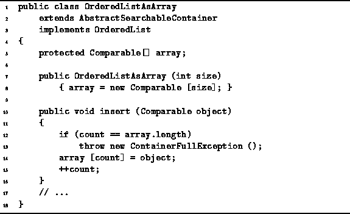

Data Structures and Algorithms
with Object-Oriented Design Patterns in Java
Data Structures and Algorithms
with Object-Oriented Design Patterns in Java
Program  gives the definitions of the
constructor and the insert methods
of the OrderedListAsArray class.
The constructor takes a single argument which specifies
the length of array to use in the representation of the ordered list.
Thus if we use an array-based implementation,
we need to know when a list is declared
what will be the maximum number of items in that list.
The constructor initializes the array variable as
an array with the specified length.
The running time of the constructor is clearly O(n),
where
gives the definitions of the
constructor and the insert methods
of the OrderedListAsArray class.
The constructor takes a single argument which specifies
the length of array to use in the representation of the ordered list.
Thus if we use an array-based implementation,
we need to know when a list is declared
what will be the maximum number of items in that list.
The constructor initializes the array variable as
an array with the specified length.
The running time of the constructor is clearly O(n),
where  .
.

Program: OrderedListAsArray class constructor and insert methods.
The insert method is part of the interface of all searchable containers. Its purpose is to put an object into the container. The obvious question which arises is, where should the inserted item be placed in the ordered list? The simple answer is, at the end.
In Program we see that the insert
method simply adds the new item to the end of the list,
provided there is still room in the array.
Normally, the array will not be full,
so the running time of this method is O(1).
 Copyright © 1998 by Bruno R. Preiss, P.Eng. All rights reserved.
Copyright © 1998 by Bruno R. Preiss, P.Eng. All rights reserved.